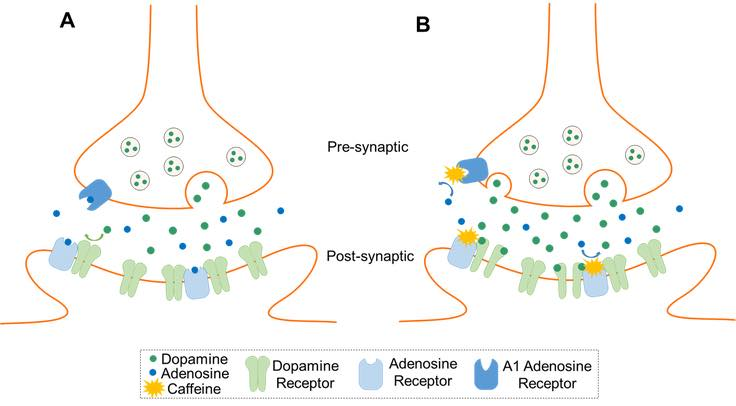

“Humanity Runs on Coffee” - လို့ ဒီနေ့ခေတ်မှာ ပြောလို့ ရနေပါပြီ။ Coffee မသောက်တဲ့ သူဆိုတာ ခပ်ရှားရှားပါ၊ Coffee ကို daily dose သောက်ကြတဲ့သူတွေ Social Beverage တစ်ခုအနေနဲ့ သောက်ကြတဲ့ သူတွေ ဘယ်လိုပဲ ပြောပြော coffee သောက်တဲ့ culture က ယနေ့ ခေတ်လူတွေရဲ့ everyday routine ဖြစ်နေပါပြီ။ Coffee ဆိုတာနဲ့ လူတွေ တွဲမြင်ကြတာက တက်ကြွလာမယ်၊ mood elevate ဖြစ်လာမယ်၊ အိပ်မငိုက်တော့ဘူး (တခါတလေတော့ ရင်တုန်တာတွေ၊ ရှူးခဏ ခဏပေါက်တာတွေ တော့ ရှိတတ်ပါတယ်)။ ဒီလို effect တွေ ဘယ်က ရသလဲ ဆိုရင် coffee မှာပါတဲ့ "Caffeine" ဆိုတဲ့ ingredient အကြောင်းပြောရပါမယ်။ Caffeine က ခန္ဓာ ကိုယ် မှာ act လုပ်တဲ့ နေရာတွေ အများကြီးရှိပါတယ်။ အဲ့ထဲမှာမှ အရေးအကြီးဆုံး ဖြစ်တဲ့ "မအိပ်ဘဲ နိုးကြားနေစေတဲ့ effect"(sleep-postponing effect) ကတော့ central nervous system ထဲမှာ ရှိတဲ့ Adenosine Receptor တွေပါ။ ပုံမှန်အားဖြင့် adenosine က adenosine receptor (A1, A2 etc..) မှာ သွားပေါင်းပြီး sleep ကို facilitate လုပ်ပါတယ်။ (deep sleep ကိုပေါ့) Adenosine က inhibitory neurotransmittor အမျိုးအစား ဖြစ်ပါတယ်။ ညဘက်ရောက်လေလေ level တက်လာလေလေပါ။ Caffeine က Methylxanthine အမျိုးအစားဖြစ်ပြီး သူက adenosine receptor antagonist (receptor ကိုပိတ်တဲ့ ပစ္စည်း) ဖြစ်တော့ Adenosine receptor မှာ သွားထိုင်ပြီး block ထားနိုင်ပါတယ်။ အဲ့တော့ adenosine က လာပေါင်းလို့မရ sleep induce လုပ်လို့မရတော့ မအိပ်တော့ပဲ alert ဖြစ်နေတာပါ။
Brain ရဲ့ တစ်ချို့နေရာတွေမှာ (eg. nucleus accumbens လို နေရာမျိုးမှာ) adenosine receptor နဲ့ အတူ dopamine receptor ပါ တွဲထားပါတယ်။ အဲ့လိုနေရာတွေမှာ adenosine က dopamine အတွက် allosteric antagonist ပါ ဘာလို့လဲ ဆိုရင် adenosine လာပေါင်းထားရင် receptor ရဲ့ configuration အရ dopamine လာပေါင်းလို့မရပါဘူး။ Caffeine လာပေါင်းတဲ့ အခါကျတော့ အဲ့ဒီ receptor က allosteric regulation နဲ့ structural configuration ပြောင်းပြီး dopamine ပေါင်းလို့ အဆင်ပြေသွားပါတယ်။ အဲ့တော့ မှ dopamine ရဲ့ effect တွေပြပါတော့တယ်။ dopamine ကတော့ အားလုံး သိကြတဲ့ အတိုင်း “happy hormone” ဆိုတဲ့ အတိုင်း pleasure, feeling of reward ကို ရစေမှာပါ။ Caffeine ကိုယ်တိုင်ကလဲ dopamine release ကို ဖြစ်စေတယ်လို့လဲ တချို့ study တွေက ပြောကြပါတယ်။ Dopamine က စွဲလမ်းမှု ကို ဖြစ်စေတဲ့ hormone ပါ (Cocaine, Amphetamine တွေကလည်း dopamine ကနေတစ်ဆင့် addiction ရစေတတ်ပါတယ်)။ ဒါကြောင့် coffee များများသောက်တဲ့သူတွေ coffee ကို ပိုကြိုက်တတ်ကြတာပါ။ Addiction ဖြစ်စေတဲ့ နောက်တစ်ချက်က Adenosine receptor တွေဟာ caffeine နဲ့ ကြာကြာ အပိတ်ခံရ (antagonize လုပ်ခံရ) တဲ့အခါမှာ neurone မှာ adenosine receptor upregulation ဖြစ်လာပါတယ်။ တစ်နည်းပြောရရင် လိုက်ပိတ်စရာ adenosine receptor တွေ များလာတာပေါ့ (neuronal cell ကနေ adenosine receptor တွေ လိုနေတယ် ထင်ပြီး ပိုထုတ်လိုက်တာပါ)။ အဲ့ဒီ အချက်ကြောင့်ပဲ သူ့ကို ပိတ်ဖို့ caffeine dose လဲပိုပိုလိုလာပါတယ်။ အဲ့ဒါကြောင့် နေ့တိုင်း coffee ၂ ခွက် ကနေ ၃ ခွက် သောက်တဲ့ သူတွေမှာ caffeine tolerance ရပါတယ်။ Tolerance ဆိုတာကတော့ သူတို့အတွက် coffee 1 ခွက်လောက်က သိပ်မတိုးတော့ တာမျိုး ဖြစ်တတ်ပါတယ်။ ဘာလို့လဲဆိုတော့ သူတို့မှာကပိတ်စရာ adenosine receptor တွေက အများကြီးရှိနေပြီမလို့ပါ။ သူတို့အနေနဲ့ coffee ဖြတ်လိုက်ရင် / ဒါမှမဟုတ် မသောက်တဲ့ နေ့တွေဆိုရင် mood မကောင်းတာတွေ အိပ်ချင်တာတွေ ဖြစ်နေတတ်ပါတယ်။ ပုံမှန် ထွက်နေကျ adenosine က ရှိနေတဲ့ receptor အများကြီးမှာ သွား bind ပြီး လိုတာထက်ပိုတဲ့ inhibitory effect တွေရကုန်ပါတယ် (long term amphetamine abusers တွေမှာ တွေ့ရတဲ့ withdrawal သဘောမျိုးပါပဲ) အဲ့ဒီလိုနဲ့ coffee ထပ်သောက်ရင်း tolerance and addiction ထပ်ရရင်းနဲ့ သံသရာလည်နေပါတော့တယ်။
Caffeine ရဲ့ half-life က သာမန်လူတစ်ယောက်မှာဆို 6 hours လောက်ရှိပါတယ်။ ဆိုလိုတာက coffee ဆိုင်က coffee တစ်ခွက် (200mg of caffeine) လောက် ကို နေ့လည် 3:00PM မှာ သောက်ထားရင် ည 9:00PM မှာ (100mg of caffeine) လောက်တော့ ကျန်ဦးမှာပါ။ (သောက်လိုက်တဲ့ coffee ကို 100% လုံး ခန္ဓာကိုယ်က စုပ်ယူတယ်လို့ ယူဆရင်ပေါ့)။ Caffeine ကအိပ်ရေးပျက်မှုကို ဖြစ်စေတာကြောင့် ဆာလောင်မှု (hunger) ကိုလည်းဖြစ်စေပါတယ်။ ပုံမှန်ဆိုရင် အိပ်ချိန်မှာ leptin ဆိုတဲ့ hormone level တွေ တက်စေပြီး ghrelin ဆိုတဲ့ hormone level ကျစေပါတယ်။ အဲ့လိုနဲ့ စားချင်စိတ်ကို အိပ်နေတုန်းမှာ suppress လုပ်ပါတယ် Caffeine က အိပ်ရေးပျက်စေတာမလို့ leptin level ကျ ghrelin level တက်စေပြီး ဗိုက်ဆာစေတဲ့ hunger signal ရစေမှာပါ။ ဒါ့ အပြင် caffeine က အစာအိမ်မှာ ရှိတဲ့ receptor တွေကို stimulate လုပ်ပြီး အစာအိမ်က acid ထုတ်တာကိုလည်း များစေပါသေးတယ်။ Coffee ရဲ့ side effect လို့အများပြောကြတဲ့ ရင်တုန် (palpitation) စေတာကတော့ caffeine က နှလုံး မှာရှိတဲ့ phosphodiesterase ဆိုတဲ့ enzyme တစ်မျိုးကို သွားပိတ်လို့ဖြစ်ပါတယ်။ အဲ့လိုပိတ်လိုက်တဲ့အတွက် ရလဒ်အနေနဲ့ကတော့ နှလုံး ကြွက်သားမှာ cyclic adenosime monophosphate (cAMP) ဆိုတဲ့ molecule လေးတွေရဲ့ level တက်လာစေပါတယ်။ cAMP ကဘာလုပ်သလဲဆိုရင် နှလုံး ကြွက်သားမှာ နှလုံးခုန်နှုန်းတွေ မြန်လာတာတွေ နှလုံးကြွက်သား ညှစ်အားကောင်းလာတာတွေ ဖြစ်လာပါတယ်။ အဲဒီကနေ တစ်ဆင့် ရင်တုန်ခြင်း ကို ဖြစ်စေပါတယ်။ နှလုံး အလုပ်ပိုလုပ်ရာက တစ်ဆင့် Blood flow (သွေးလည်ပတ်မှု) ပိုမြန်လာလို့လဲ ကျောက်ကပ်ကို ရောက်တဲ့ blood flow များပြီး ဆီးသွားစေပါတယ်။
Contributed by: Khaing Khant Htun
References:
Ganong's Review of Medical Physiology
Examine.com - How does caffeine works in your brain?
How does caffeine keep us awake? - Hanan Qasim